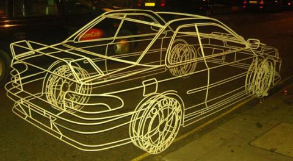

Submitted by Richard Smith on July 5, 2011 - 08:20
Copenhagen Suborbitals is a Danish team of rocketeers who are planning to launch a one person suborbital rocket called Tycho Brahe. The project has progressed to the demonstration stage with a dummy taking the place of the single passenger. It's a cozy fit with the rocket diameter not much large than the chest measurement of the lucky (brave) passenger, who will have to stand upright in the nose cone.
Submitted by Richard Smith on June 27, 2011 - 07:59
I just had to follow up on my recent fake real wireframe post with a similar theme on cutaway models. As an engineer I've always found it fascinating to see how things work, and so when I come across cutaway schematics of planes, cars, engines, etc. happy am I. Better still if I find an actual physical cutaway. So for your enjoyment, but also for mine, check out the physical cutaway collection at Oobject.
Submitted by Richard Smith on June 20, 2011 - 07:52
Much has been made of the CFD-only strategy recently abandoned by the Virgin Racing Formula 1 team as an admission that CFD is responsible for the team's poor performance. Whether this is in fact the case is open for debate. I believe VR's poor performance is due to a general lack of funding across many disciplines not just aerodynamics, but that's another story. Anyway, as a counter to those who think wind tunnel testing is essentially flawless, consider the recent problems Ferrari have experienced with their wind tunnel.
Submitted by Richard Smith on May 30, 2011 - 14:17
What happens when you take a virtual model, in this case a wireframe car model, into the real world? Besides blowing people's minds you get a surreal look that is sure to draw attention to your cause - often advertising. But who cares when it looks this good?
Fake Wireframe Subaru Impreza: Benedict Radcliffe's "Modern Japanese Classic"
Submitted by Richard Smith on May 23, 2011 - 12:38
The only chance you'll usually get to see the secrets of a Formula 1 car is in the aftermath of a racing incident (otherwise known as a crash) just before the obligatory veil of secrecy in the form of a tarp cover is hurriedly thrown over the exposed secrets. Even then it is usually up for debate and difficult to discern what purpose the mangled carbon fiber might have performed prior to the incident. So we are indeed privileged that Mercedes GP recently commissioned an exploded view of one of their cars revealing many of the inner workings of their prized design.
Submitted by Richard Smith on April 29, 2011 - 09:30
There is a high profile debate going on in the motor racing media and motor racing discussion forums that Computational Fluid Dynamics (CFD) is flawed. The proof cited is the poor performance of Virgin Racing (VR) Formula 1 racecars in the 2010 F1 championship and repeated so far in this year's championship. Why is CFD deemed responsible for this sorry state of affairs? Because VR have proclaimed that the aerodynamic design of its cars forgoes wind tunnel testing and only uses CFD. What if the CFD-only strategy is merely a symptom rather than the cause of the problems at VR?
Submitted by Richard Smith on April 18, 2011 - 10:32
I'm a little off topic with this post - more structural mechanics than fluid mechanics. Normal service will resume shortly, but in the mean time, I have to admit it - I'm a recovering barefoot runner. Recovering in the sense that no matter what I've tried up to now, whenever I run fast or long in barefoot shoes (oxymoron I know, bare with me) I end up with calf muscles that are so sore I can't run for days afterwards. Well I thought it was way past time to mine my engineering knowledge for some insight, and this is what I came up with.
Barefoot Running Shoes: Vibram Five Fingers Bikila
Submitted by Richard Smith on April 5, 2011 - 08:46
In an effort to offset electrical load and decrease its carbon footprint, the city of Reno, Nevada is investigating various types of wind turbines (and photovoltaic solar cells too).
Submitted by Richard Smith on April 1, 2011 - 00:00
We are pleased to announce the launch of the Computational Fluid Dynamics News Network - CFDNN - the world's first 24/7 TV channel dedicated to all things CFD. Like other 24 hour news shows, CFDNN will provide an addictive mix of news, technology, weather, entertainment, gossip, opinion, movies, and sports, but all viewed through a CFD prism. I guarantee you'll never have seen anything like it.


 Get our Blog feed
Get our Blog feed